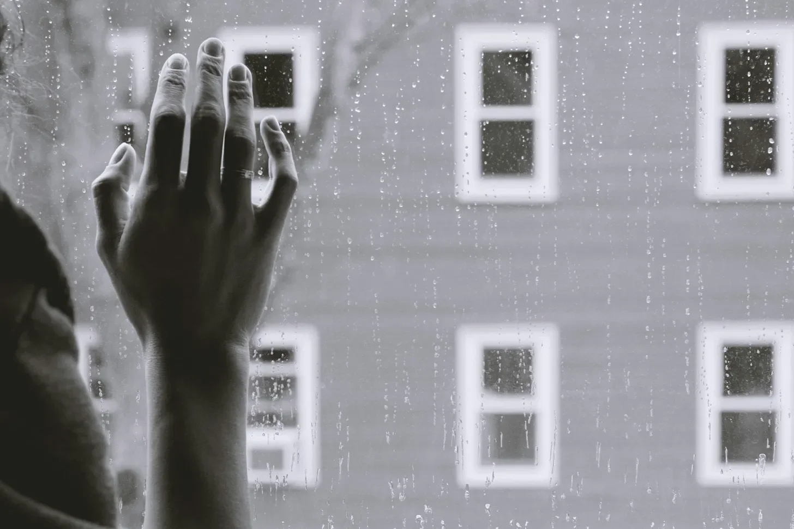

장면 시작
내부. 아파트 - 낮
작고 삭막한 아파트는 창문 하나에서 들어오는 차가운 푸른빛으로 가득 차 있다. 가구는 듬성듬성 놓여 있고, 모든 것이 실용적이다. 벽은 텅 비어 있고, 달력 하나만 걸려 있는데, 11월 17일이 빨간색으로 동그라미 쳐져 있다.
엘라라(30대), 피곤한 눈과 긴장된 에너지를 가진 그녀는 방 안을 서성인다. 그녀는 가장 좋은 옷을 입고 있는데, 수년 동안 가지고 있었지만 일년에 한 번만 입는 드레스다.
문을 두드리는 소리. 엘라라는 숨을 멈추고 얼어붙는다. 그녀는 문으로 달려가 문을 활짝 연다.
마르코(30대)가 거기에 서 있다. 엘라라의 긴장된 흥분을 그대로 비추는 거울 같다. 그는 약간 시든 붉은 장미 한 송이를 들고 있다.
엘라라
(속삭이며)
마르코… 왔구나.
마르코
(미소지으며)
아무것도 나를 막을 수 없었어.
그는 안으로 들어와 그녀를 껴안는다. 포옹은 꽉 조이고, 간절하며, 일년 동안의 그리움으로 가득 차 있다.
엘라라
(물러나며)
장미… 아름다워.
마르코
별거 아니라는 거 알아, 하지만 꽃 시장… 그곳은 감시가 심해. 나는…
엘라라
(그의 뺨을 만지며)
완벽해.
그들은 잠시 침묵 속에 서서 서로를 바라보기만 한다. 그날의 무게가 그들 사이에 무겁게 걸려 있다.
마르코
(목을 가다듬으며)
그래서… 뭐 하고 싶어? 우리에게는…
엘라라
(슬프게 미소지으며)
12시간 17분 그리고…
그녀는 벽에 걸린 시계를 확인한다.
엘라라 (계속)
…42초.
마르코
(그녀를 끌어당기며)
그럼 한 순간도 낭비하지 말자.
그는 그녀를 작은 소파로 이끌고 그들은 앉아서 손을 잡는다.
엘라라
모든 걸 말해줘. 당신의 한 해는 어땠어?
마르코
주로 일이었어. 제조 할당량이 다시 늘었어. 그들은 우리를 그 어느 때보다 더 압박하고 있어.
엘라라
주방도 마찬가지야. 먹여야 할 입이 더 많다고들 해. 근데 이 사람들은 누구야? 어디서 오는 거야?
마르코
아무도 몰라. 아니면 아무도 말하지 않아.
잠시 침묵이 흐른다.
엘라라
좋은 얘기 해줘. 뭔가… 행복한 거.
마르코
(생각하며)
어느 날… 공장에서 집으로 걸어가는데 새를 봤어. 진짜 새, 드론이 아니라. 파란색이었어, 밝은 파란색. 그런 색깔을 가진 새가 있는지 몰랐어. 창턱에 앉아서 노래를 불렀는데… 가장 아름다운 소리였어. 잠깐 동안만. 그리고 사라졌어.
엘라라
(그의 어깨에 머리를 기대며)
희망의 징조야. 아마도 이 세상에는 아직 아름다움이 남아 있을 거야.
마르코
그럴지도. 잠시 동안은.
그들은 편안한 침묵 속에 앉아 서로의 존재를 즐긴다.
엘라라
…예전의 삶이 어땠는지 생각해 본 적 있어?
마르코
매일. 공원 기억나? 호수 옆에 버드나무가 있던 곳?
엘라라
우리가 처음 키스한 곳이야.
마르코
우리는 그 나무 아래에 누워 몇 시간이고 이야기를 나누곤 했어. 우리에게는 꿈이 있었고… 계획이…
엘라라
그리고 지금은… 이거. 일년에 하루. 불공평해.
마르코
그들이 우리에게 준 전부야.
엘라라
(일어나며, 흥분해서)
부족해! 절대 부족할 거야! 우리는 이것보다 더 나은 것을 받을 자격이 있어, 마르코. 우리는 함께하는 삶을 누릴 자격이 있어.
마르코
(그녀를 다시 끌어당기며)
알아, 엘라라. 알아.
그는 그녀의 정수리에 키스한다.
마르코 (계속)
하지만 그렇게 생각하면 안 돼. 위험해. 그들이 우리를 감시하고 있어, 알잖아.
엘라라
상관없어. 두려워하는 데 지쳤어.
마르코
(낮은 목소리로)
우리는 그래야 해. 서로를 위해. 만약 그들이 우리를 잡으면…
위협이 공중에 떠 있다. 그들은 둘 다 결과를 알고 있다.
엘라라
(부드럽게)
그냥… 상황이 달랐으면 좋겠어.
마르코
나도. 그 무엇보다도.
그는 그녀를 꽉 안고, 그들은 잠시 침묵 속에 앉아 있다.
엘라라
(침묵을 깨며)
너한테 줄 게 있어.
그녀는 일어나 작은 찬장으로 간다. 그녀는 낡고 가죽으로 묶인 책을 꺼낸다.
엘라라 (계속)
도서관 서가에서 찾았어. 시집이야.
마르코
(책을 받으며)
그들이 아직도 주방에서 시를 읽게 해?
엘라라
오래된 것들만. 그들은 우리 마음을 부드럽게 만든다고 해.
마르코
(미소지으며)
그럼 그들은 당신을 잘 모르는 거야.
그는 책을 펴서 소리 내어 읽는다.
마르코 (계속)
“사랑은 변화를 만나면 변하는 사랑이 아니며,
구부러짐을 만나면 구부러지는 사랑이 아니니…”
엘라라는 그의 목소리에 귀를 기울이며 그에게 기댄다.
마르코 (계속)
“오 아니! 그것은 결코 흔들리지 않는 영원히 고정된 표식
폭풍우를 바라보며 결코 흔들리지 않으니…”
그는 그녀를 올려다보며, 그의 눈은 사랑으로 가득 차 있다.
마르코 (계속)
“그것은 모든 방황하는 배에 별이 되어,
그 가치는 알 수 없으나, 그 높이는 측정되니.”
엘라라
셰익스피어?
마르코
그는 사랑에 대해 한두 가지 알고 있었어.
그는 책을 덮고 옆에 둔다. 그는 그녀의 손을 잡는다.
마르코 (계속)
엘라라… 사랑해.
엘라라
(눈물이 솟아오르며)
나도 사랑해, 마르코.
그들은 키스한다. 길고 열정적인 키스는 그들의 사랑과 절망을 말해준다.
벽에 걸린 시계가 크게 똑딱거린다. 초가 흘러간다.
페이드 아웃.
장면 끝
SCENE START
INT. APARTMENT - DAY
A small, sterile apartment bathed in the cold blue light of a single window. Sparse furniture, everything functional. The walls are bare except for a calendar with a single date circled in red: November 17th.
ELARA (30s), with tired eyes and a nervous energy, paces the room. She is dressed in her finest clothes, a dress she’s owned for years but has only worn once a year.
A knock at the door. Elara freezes, her breath catching in her throat. She rushes to the door and throws it open.
MARCO (30s) stands there, a mirror of Elara’s nervous excitement. He holds a single red rose, slightly wilted.
ELARA
(whispering)
Marco… you came.
MARCO
(smiling)
Nothing could keep me away.
He steps inside and embraces her. The hug is tight, desperate, full of a year’s worth of longing.
ELARA
(pulling back)
The rose… it’s beautiful.
MARCO
I know it’s not much, but the flower markets… they’re watched closely. I didn’t want to…
ELARA
(touching his cheek)
It’s perfect.
They stand in silence for a moment, just looking at each other. The weight of the day hangs heavy between them.
MARCO
(clearing his throat)
So… what do you want to do? We have…
ELARA
(smiling sadly)
Twelve hours, seventeen minutes, and…
She checks the clock on the wall.
ELARA (cont.)
…forty-two seconds.
MARCO
(pulling her close)
Then let’s not waste another one.
He leads her to the small couch and they sit, hands intertwined.
ELARA
Tell me everything. What was your year like?
MARCO
Work, mostly. The fabrication quotas are up again. They’re pushing us harder than ever.
ELARA
It’s the same at the kitchens. More mouths to feed, they say. But who are these people? Where are they coming from?
MARCO
No one knows. Or no one’s talking.
A beat of silence.
ELARA
Tell me something good. Something… happy.
MARCO
(thinking)
There was this one day… I was walking home from the factory and I saw a bird. A real one, not a drone. It was blue, bright blue. I didn’t even know birds came in that color. It landed on a window sill and sang… the most beautiful sound. Just for a moment. Then it was gone.
ELARA
(resting her head on his shoulder)
A sign of hope. Maybe there’s still beauty in this world.
MARCO
Maybe. For a little while.
They sit in comfortable silence, just enjoying each other’s presence.
ELARA
Do you ever think about… what life was like before?
MARCO
Every day. Do you remember the park? The one with the willow tree by the lake?
ELARA
We had our first kiss there.
MARCO
We used to lie under that tree and talk for hours. We had dreams… plans…
ELARA
And now… this. One day a year. It’s not fair.
MARCO
It’s all they’ve given us.
ELARA
(sitting up, agitated)
It’s not enough! It will never be enough! We deserve more than this, Marco. We deserve a life together.
MARCO
(pulling her close again)
I know, Elara. I know.
He kisses the top of her head.
MARCO (cont.)
But we can’t think like that. It’s dangerous. They watch us, you know.
ELARA
I don’t care. I’m tired of being afraid.
MARCO
(his voice low)
We have to be. For each other. If they catch us…
The threat hangs in the air. They both know the consequences.
ELARA
(softly)
I just… I wish things were different.
MARCO
Me too. More than anything.
He holds her tight, and they sit in silence for a long moment.
ELARA
(breaking the silence)
I brought you something.
She gets up and goes to a small cupboard. She takes out a worn, leather-bound book.
ELARA (cont.)
I found it in the library stacks. It’s poetry.
MARCO
(taking the book)
They still let you read poetry in the kitchens?
ELARA
Only the old stuff. They say it keeps our minds docile.
MARCO
(smiling)
Then they don’t know you very well.
He opens the book and reads aloud.
MARCO (cont.)
“Love is not love which alters when it alteration finds,
Or bends with the remover to remove…”
Elara leans against him, listening to his voice.
MARCO (cont.)
“O no! it is an ever-fixed mark
That looks on tempests and is never shaken…”
He looks up at her, his eyes full of love.
MARCO (cont.)
“It is the star to every wandering bark,
Whose worth’s unknown, although his height be taken.”
ELARA
Shakespeare?
MARCO
He knew a thing or two about love.
He closes the book and sets it aside. He takes her hands in his.
MARCO (cont.)
Elara… I love you.
ELARA
(tears welling up in her eyes)
I love you too, Marco.
They kiss, a long, passionate kiss that speaks of their love and their desperation.
The clock on the wall ticks loudly. The seconds slip away.
FADE OUT.
SCENE END
처음으로 이상함을 느낀 건 화요일이었다. 상쾌한 가을 공기가 내 깃털 사이로 스며들자, 나는 털의 따뜻함, 겨울의 추위를 막아줄 곰의 두꺼운 털옷을 갈망했다. 하지만 변신에 집중하려 해도 아무 일도 일어나지 않았다. 독수리의 발톱처럼 날카로운 공포가 나를 덮쳤다. 그저 일시적인 현상일 뿐이라고 스스로를 위로했다.
The first time I noticed it was a Tuesday. The crisp autumn air sent shivers through my feathers, and I yearned for the warmth of fur, a bear’s thick coat to shield me from the bite of winter. Yet, when I concentrated, focusing on the shift, nothing happened. Panic clawed at me, sharp as any eagle’s talons. It was a fluke, I told myself, just a momentary lapse.
하지만 그런 현상은 점점 더 자주 일어났다. 한때는 유연하고 쉽게 이루어지던 변신이 느려지고 흔들리기 시작했다. 올빼미의 눈은 침침해졌고, 낮에서 밤으로 적응하는 속도가 느려졌다. 늑대의 강력한 다리는 뻣뻣해졌고, 떨림이 잦아졌다. 마치 내 존재의 핵심, 나를 나이게 하는 본질이 천천히 모래로 변해 손아귀에서 빠져나가는 것 같았다. 나는 나의 마법, 즉 나를 만든 생명의 원천을 잃어가고 있었다.
But the lapses grew more frequent. My transformations, once fluid and effortless, became sluggish, faltering. My owl eyes dimmed, slow to adjust from day to night. My wolf’s powerful legs grew stiff, prone to tremors. It was as if my essence, the core of my being, was slowly turning to sand, slipping through my grasp. I was losing my magic, the very lifeblood that made me who I was.
두려움은 나의 끊임없는 동반자가 되었다. 마법이 완전히 사라지면 나는 무엇이 될까? 이 현재의 모습에 갇혀 영원히 하늘의 생물로 살아야 할까, 아니면 오래전에 버렸던 인간의 껍데기로 돌아가야 할까? 그 약하고 취약한 상태로 돌아간다는 생각에 나는 두려움에 휩싸였다.
Fear became my constant companion. What would I become when the magic finally died? Would I be trapped in this current form, forever a creature of the skies, or would I revert to the human shell I had abandoned so long ago? The thought of returning to that weak, vulnerable state filled me with dread.
날이 갈수록 나는 변신할 때 종종 피난처로 삼았던 외딴 동굴로 물러났다. 벽에는 내 과거 삶의 흔적이 새겨져 있었다. 호랑이였을 때의 발톱 자국, 뱀의 형태였을 때의 흔적. 그것은 내가 살아온 삶, 내가 거쳐온 수많은 존재에 대한 증거였다.
As the days dwindled, I retreated to a secluded cave, a haven where I had often sought refuge during my transformations. The walls were etched with the marks of my past lives - claw marks from my days as a tiger, the imprint of my serpent form. It was a testament to the life I had lived, the countless beings I had been.
나는 눈을 감고 마지막 남은 힘을 끌어모았다. 마지막 변신, 내 운명을 선택할 마지막 기회. 그리고 사라져가는 마법의 빛 속에서 나는 내가 무엇이 되어야 하는지 깨달았다. 하늘을 나는 독수리도, 어슬렁거리는 늑대도 아닌 동굴 입구에 서 있는 튼튼한 참나무가 되어야 했다. 뿌리를 내리고 굳건히 서서 숲의 침묵의 수호자가 되어, 나 역시 흙으로 돌아갈 때까지 변화하는 계절과 삶과 죽음의 순환을 지켜볼 것이다. 그리고 그 생각 속에서 나는 이상하고도 예상치 못한 평화를 찾았다.
I closed my eyes, drawing on the last vestiges of my power. One final shift, one last chance to choose my fate. And in the fading light of my magic, I knew what I had to become. Not the soaring eagle, nor the prowling wolf, but the sturdy oak that stood at the mouth of the cave. Rooted, steadfast, a silent guardian of the forest, I would witness the changing seasons, the cycle of life and death, until I too returned to the earth. And in that thought, I found a strange and unexpected peace.